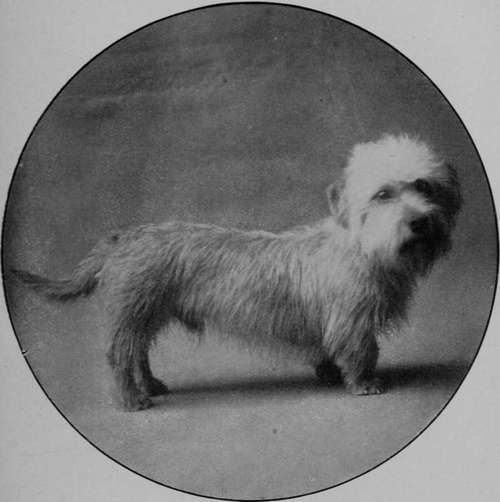

The Dandie Dinmont
Description
This section is from the book "Sporting Dogs. Their Points And Management In Health, And Disease", by Frank Townend Barton. Also available from Amazon: Sporting Dogs; Their Points and Management in Health and Disease.
The Dandie Dinmont
It was not until 1814 that this variety of dog received his present name, through Sir Walter Scott having written Guy Mannering, in which the hero, Dandie Dinmont, plays such a conspicuous part.
To the Field, so far back as 1778, a Mr J. Davidson wrote a letter as to how James Davidson, the original Dandie Dinmont, came into the possession of his first Dandies, the chief of this account being as follows:—
" The Border Muggers were great breeders of Terriers, and in their wanderings the different tribes would meet once or twice yearly at some of the border villages. If they could not get a badger, they would try their dogs on a foumart (wildcat) or a hedgehog.
"Jock Anderson, the head of the tribe, had a red bitch that for such work beat all the dogs that came over the border.
" Geordie Faa had a wire-haired dog that was the terror of all the dogs in the district, and that was good at badger, fox, or foumart.
"A badger had been procured, and both the dog and bitch drew the badger every time.
" Geordie Faa said to Jock Anderson, ' Let's have a big drink, the man first down to lose his dog.'
Dandie-Dinmont Terrier Dog Thistle Grove Ben (Property of Mr R. Fisher, Hawick).
" ' Done,' says Jock.
" Down they sat on the green, and in eighteen hours Jock was laid out, and Geordie started off with the dogs.
" They were mated, and produced the first Pepper and Mustard, and these were presented by Geordie to James Davidson (' Dandie Dinmont')".
The foregoing account would appear to be fairly acceptable, and one that is in accordance with the gameness of these little Terriers.
The breed is a hardy one; are good-tempered, and make excellent companions.
The chief points of the Dandie-Dinmont are as follows:—
Head
The skull ought to be broad between the ears, and the forehead well domed. It should be covered with light, silky hair, softer the better. The muzzle deep, and from it—excepting the bare part about an inch from the back part of the nose—there ought to be hair growing, a little darker than that on the head.
Level, strong, and sound teeth are a sine qua non.
Large, full round eyes, set well apart, and low down, with a lively expression; a black nose; black inside mouth, together with large, low-placed, pendulous ears, hanging close to cheek, and tapering on their posterior borders.
The ears should be covered with soft, brown hair, forming a feathering around the bottom, and 3 or 4 inches long.
Neck
Short and well rounded.
Body, long and strong, with well-rounded ribs, and a downward curve behind the shoulders, but slightly arched at the loins.
Tail
About 8 inches in length, thick at the set-on, and then thicker for 2 or 3 inches, afterwards tapering.
The upper face of the tail should be covered with wiry hair, and the under side also have lighter-coloured hair. When at rest, the tail ought to assume a scimitar-like curve, and under excitement carried on a level with its set-on.
Fore And Hind Limbs
Short fore-legs, set well apart, and if dog is blue-coloured, the hair on them should be tan or fawn, in accordance with body colour.
A couple of inches of feather ought to be present, and a shade lighter than that on the front of the legs.
In a "mustard" Dandie the hair on the head is cream-coloured.
The hind-legs, have no feather, neither should they have any dewclaws. If present at birth they must be removed.
Colour
Mustard or Pepper. If the former, the tint is from a reddish-brown to a delicate fawn; the head creamy and darker.
Pepper-coloured Dandies are either steel-coloured, or a light silvery grey, and are preferred with the body colour blending with that on the limbs.
The most useful weight is about 20 lbs., and the height 8 to 11 inches.
The coat should be a mixture of hard and soft hair, yet crisp to the feel.
Society
Dandie-Dinmont Terrier.
Continue to:
- prev: The Welsh Terrier
- Table of Contents
- next: Standard Of Points Of The Dandie Dinmont Terrier, As Defined And Adopted By The Dandie Dinmont Terrier Club